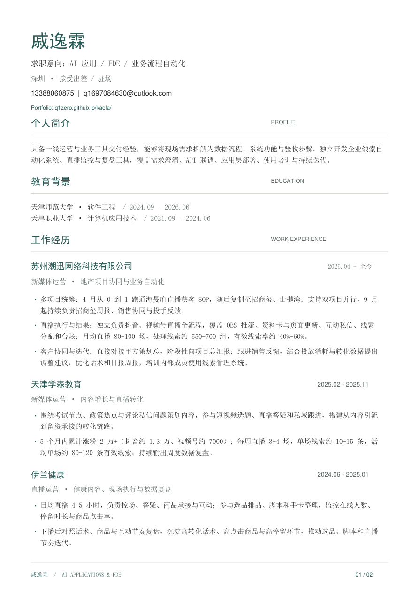
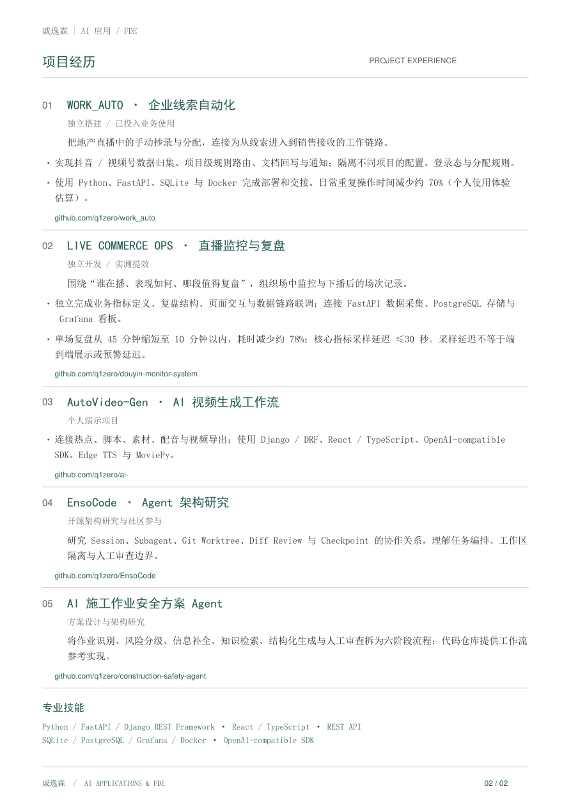

QI YILIN / RESUME
Experience, connected.
戚逸霖 · AI 应用与 FDE 简历
从业务现场，到技术实现。查看我的工作经历、项目实践与交付能力。
若点击后进入 PDF 预览，可使用浏览器的下载或保存功能。
简历预览
点击页面可打开 PDF

QI YILIN / RESUME
从业务现场，到技术实现。查看我的工作经历、项目实践与交付能力。
若点击后进入 PDF 预览，可使用浏览器的下载或保存功能。

